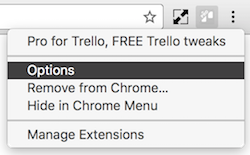
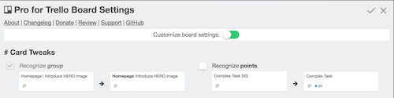
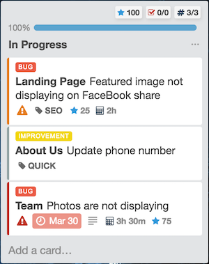
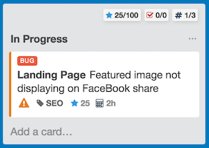

Pro4Trello 2.2 brings most wanted features
You asked for it - here's the answer!
Default Pro for Trello settings for all boards
There were numerous (completely justified) requests to make it possible to set default settings that will apply across all Trello boards. Well, now you can do just that! Start by clicking on the Pro for Trello icon in the top right corner of your browser:

It's a simple page for you to manage your Pro4Trello defaults:

You can still customize settings for each individual board:

Visualized task progress
in list stats
More than two requests for the same thing usually means it's something awesome. So how about a nice looking Trello UI inspired task progress bar?

Visible VS total cards info
in list stats
Applying both Trello native filters and Pro4Trello filters to cards now reflects in list stats:
